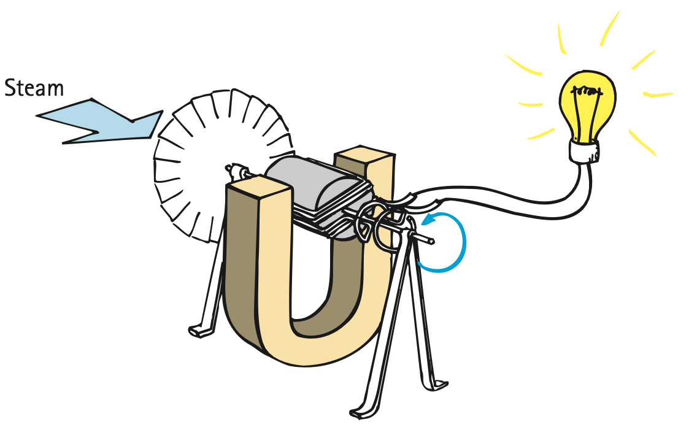
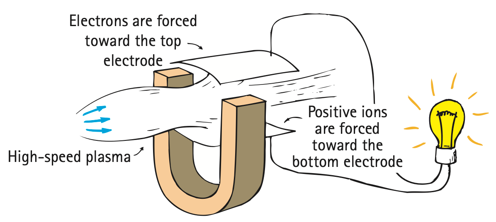

Modern Electromagnetic Systems
Mathematical idea: Transformer turns control voltage ratio, while ideal input and output power remain approximately equal and electric power follows $P=IV$.
You will trace energy through generators and transformers, compare motor-like and induction-like devices, and use conservation of energy to evaluate technology claims.
Learning Target
Students will apply magnetism, electromagnets, magnetic forces, and electromagnetic induction to real-world technologies and systems.
I can statements
- I can explain how electromagnetic systems use energy transformations.
- I can describe how generators, motors, transformers, speakers, microphones, maglev systems, MRI, and electric meters use electromagnetism.
- I can explain why energy input is required for electrical energy output.
- I can critique claims that a device produces energy from magnetism alone.
- I can analyze a modern electromagnetic system using fields, forces, current, induction, and energy conservation.
- I can use evidence to defend whether a proposed electromagnetic model makes sense.
Vocabulary
These are words you will see in this section. Do not define them yet.
- electromagnetic system
- energy transformation
- transformer
- primary coil
- secondary coil
- step-up transformer
- step-down transformer
- electric power
- generator
- motor
- MRI
- maglev
Use the preview activity to decide which words you already know, recognize, or do not know yet. Watch for these words in bold when they are first introduced or defined in the reading.
Preview: Skim Before You Read
Directions
Before reading closely, skim the vocabulary list and the section. Look at titles, headings, bold words, pictures, captions, diagrams, tables, and formulas. Do not try to understand everything yet. Your job is to notice what already looks familiar and make predictions about what this section may explain.
Step 1 — Sort the vocabulary. Write each vocabulary word in the column that best matches what you know right now. You may move a word later.
| Know for sure | Recognize | Don’t know yet |
|---|---|---|
Step 2 — Skim the section. Record what catches your attention before you read closely.
| What I noticed | |
|---|---|
| What I predict | |
| What I wonder |
Content: Read, Look, Annotate, Apply
Directions
Read in short chunks. Annotate the prose and the figures together: underline evidence, circle or highlight bold vocabulary, label arrows or measured features, connect a sentence to an image, and write short questions or connections in the margins.
Reading 1: Electrical output begins with an energy input
An electromagnetic system is a connected device or set of components whose operation depends on electric current, magnetic fields, magnetic forces, or induction. To analyze one well, trace both the physics interactions and the energy path.
Every useful device includes an energy transformation. A power-station generator, for example, does not begin with electricity. Steam, falling water, wind, or another source drives a turbine and rotating shaft. The generator then converts mechanical input into electrical output.

Image read: Draw an energy-flow arrow from steam to turbine to generator to lamp. Label the form or carrier of energy at each stage.
The source also shows a magnetohydrodynamic generator, in which high-speed plasma moves through a magnetic field. It uses the same broad idea—moving charged matter in a magnetic field can separate charge and produce electrical output—even though the mechanical design differs from a rotating copper coil.

Image read: Identify what is moving and what stays fixed. Mark the electrical output path through the external circuit.
This is a powerful conservation check for extraordinary claims. Magnets can exert forces and redirect moving charge, but they are not an unlimited fuel. Continuous electrical output requires continuous energy input somewhere in the system.
That same accounting applies at large scale. A power plant may change the source—moving water, steam from fuel, wind, or another process—but the generator stage still receives mechanical input. Electricity is an energy carrier produced by conversion, not a primary source that appears independently of the upstream system.
Stop and Discuss
- Trace the energy transformation in the turbine-generator image from source motion to electrical output.
- Why is “the magnets make free electricity” an incomplete or incorrect model of a generator?
Teacher answer: Energy must enter from hand motion, wind, steam, water, etc. Magnetism provides the force/induction mechanism, not the fuel.
Example 1: Audit a generator claim
A hand-crank generator lights a bulb while a student turns the handle. The student says the magnets are the energy source.
- Identify the actual energy input that keeps the bulb lit.
- Explain the role of magnetism without calling the magnet the fuel.
Teacher answer: The hand supplies mechanical energy; the generator converts it to electrical energy.
You Try It 1: Wind turbine system
Wind turns turbine blades connected to a generator that sends current to a building.
- Trace the energy pathway through the system.
- State what would happen to electrical output if the wind and turbine both stopped.
Teacher answer: Wind kinetic energy → turbine rotation → generator mechanical input → electrical energy. If motion stops, induction/output stops.
Reading 2: Transformers transfer energy through changing magnetic fields
A transformer uses two nearby coils to transfer electrical energy through a changing magnetic field. The coil connected to the source is the primary coil; the output coil is the secondary coil.

Image read: Identify the primary and secondary. Explain why the secondary responds when the switch opens or closes but not after the primary current becomes steady.
A changing current in the primary creates a changing magnetic field. That changing field reaches the secondary and induces voltage. Alternating current is especially useful because its repeated reversal creates a continuously changing magnetic condition.


Image read: Compare the simple and practical transformer. Identify how the shared iron core helps guide the changing magnetic field through both coils.
If the secondary has more turns than the primary, the transformer is a step-up transformer and secondary voltage is greater. If the secondary has fewer turns, it is a step-down transformer and secondary voltage is lower. The turns ratio changes voltage; it does not create extra energy.
The practical iron-core design improves magnetic coupling because the core guides much of the changing field through both windings. That does not make the two coils electrically connected. Energy transfer occurs through the changing magnetic field, which is why the primary and secondary can remain separate conductors.
Stop and Discuss
- Why does the secondary coil need a changing magnetic field rather than merely a steady field?
- What distinguishes a step-up transformer from a step-down transformer in terms of coil turns and voltage?
Teacher answer: The secondary responds only while the primary magnetic field changes. More secondary turns than primary gives step-up; fewer gives step-down.
$V_s$ and $V_p$ are secondary and primary voltages. $N_s$ and $N_p$ are secondary and primary turns.
More turns on the secondary than primary means step-up voltage; fewer means step-down voltage.
Example 2: Step up the voltage
A transformer has 100 primary turns, 500 secondary turns, and 12 V across the primary.
- Use $\frac{V_s}{V_p}=\frac{N_s}{N_p}$ to determine $V_s$.
- Classify the transformer as step-up or step-down and explain.
Teacher answer: Vs=12×(500/100)=60 V; step-up because Ns>Np.
You Try It 2: Step down the voltage
A transformer has 800 primary turns, 200 secondary turns, and 120 V across the primary.
- Determine the secondary voltage.
- Explain why the lower secondary voltage does not mean energy disappeared.
Teacher answer: Vs=120×(200/800)=30 V; energy is transferred at changed voltage, with current adjusting and real losses possible.
Reading 3: Voltage can change without creating power
The turns ratio can make transformer voltage larger or smaller, but conservation of energy still controls the whole system. In an ideal transformer, the input power is approximately equal to the output power. Real transformers lose some energy as thermal energy, but they do not produce extra power.
Electric power is the rate at which electrical energy is transferred. If voltage is stepped up while ideal power stays about the same, current must decrease. If voltage is stepped down, a larger current can accompany the lower voltage.

Image read: Compare the one-turn and two-turn secondary cases. Explain how the visual evidence supports the voltage-turns relationship.
These relationships explain why transformers are valuable in power systems: they can change voltage to suit transmission or device needs while transferring energy rather than creating it. A claim that “higher voltage means free extra power” fails because voltage alone does not determine power.
The supplied source ends after a transformer Check Point; the model here uses only the relationships and explanations present before that source gap.
Stop and Discuss
- Why can a transformer increase voltage without increasing ideal output power above input power?
- If voltage is stepped up in an approximately ideal transformer, what must happen to current, and why?
Teacher answer: Ideal transformers trade voltage and current while approximately conserving power. Higher voltage at similar power means lower current.
For an idealized transformer, input and output power are approximately equal.
$$P=IV$$Electric power depends on both current $I$ and voltage $V$. If voltage rises while power stays about the same, current must fall.
Example 3: Power balance
An ideal transformer receives 60 W of input power. Its secondary operates at 20 V.
- Estimate the output power.
- Use $P=IV$ to determine the secondary current.
Teacher answer: Pout≈60 W; I=60/20=3 A.
You Try It 3: Voltage is not power
An ideal transformer steps voltage from 20 V to 100 V while input power is 200 W.
- Estimate the output power.
- Determine the secondary current and explain how the result supports energy conservation.
Teacher answer: Pout≈200 W; I=200/100=2 A. The voltage is five times larger than 20 V, so current is correspondingly lower than it would be at the same power and lower voltage.
Reading 4: Analyze the whole device, not just one component
A motor uses magnetic force on current-carrying conductors to convert electrical energy into mechanical motion. Speakers use a related force on a current-carrying coil to move a cone and create sound. A microphone can operate in the reverse direction, using motion to change magnetic conditions and create an electrical signal.

Image read: Identify the current path, magnetic field source, and mechanical output in the motor. Use those same categories to imagine what must reverse in generator operation.
Electric meters also use magnetic-force responses. A galvanometer converts a small current into a visible mechanical deflection, showing how a field-and-coil system can measure rather than simply power motion.

Image read: Trace the chain current → magnetic force → coil deflection → pointer reading.
MRI systems use powerful magnetic fields, often produced by superconducting electromagnets. A maglev transportation system uses controlled magnetic forces to reduce contact with a track and provide support or propulsion. Both systems require energy-supported equipment; neither gets unlimited energy from magnetism.

Image read: Use the levitation image as evidence of magnetic force without contact, then state why the image alone is not evidence for an energy-free transportation system.
A strong model of any modern electromagnetic technology should therefore identify: what current or motion is supplied, what magnetic field is involved, where force or induction occurs, what energy form enters, and what useful energy form leaves. Those checks help distinguish a physically supported design from a claim that violates conservation of energy.
Stop and Discuss
- Choose one device—motor, speaker, microphone, MRI, maglev, or electric meter—and identify the current/field/force-or-induction chain that makes it work.
- What evidence would you demand from a device that claims to run forever using magnets alone?
Teacher answer: A complete device model should identify input, field/current, force or induction, and output. A perpetual-magnet claim needs measured energy input/output over time and controls for hidden inputs or stored energy.
Example 4: Analyze a speaker
A speaker sends changing current through a coil placed in a magnetic field, making the coil and cone move back and forth.
- Identify the magnetic interaction that creates motion.
- State the main energy transformation from electrical input to the useful output.
Teacher answer: Speaker current in a magnetic field produces force on the coil/cone: electrical → mechanical motion → sound.
You Try It 4: Critique a “magnet-powered” machine
A website claims a wheel surrounded by permanent magnets will spin forever and continuously power a generator with no outside energy input.
- Identify the conservation-of-energy problem in the claim.
- Describe at least two measurements or observations that would be needed to test the system scientifically.
Teacher answer: The claim has no continuous energy input for continuous generator output. Require long-duration power measurements, accounting for all inputs/stored energy, load behavior, and independent replication.
Vocabulary: Define the Terms
You have now seen these words in the reading, images, and practice. Use this table to consolidate the physics meaning of each term.
| Vocabulary term | Definition |
|---|---|
| electromagnetic system | A device or connected set of components that uses current, magnetic fields, magnetic forces, or induction. |
| energy transformation | A change of energy from one form or transfer pathway to another. |
| transformer | A device that uses changing magnetic fields between coils to transfer electrical energy at a different voltage. |
| primary coil | The transformer coil connected to the input source. |
| secondary coil | The transformer coil in which output voltage is induced. |
| step-up transformer | A transformer with higher secondary voltage than primary voltage, usually because the secondary has more turns. |
| step-down transformer | A transformer with lower secondary voltage than primary voltage, usually because the secondary has fewer turns. |
| electric power | The rate of electrical energy transfer, modeled by $P=IV$. |
| generator | A device that converts mechanical energy into electrical energy through induction. |
| motor | A device that converts electrical energy into mechanical motion using magnetic forces. |
| MRI | Magnetic resonance imaging, a technology that uses powerful magnetic fields and other electromagnetic processes to make medical images. |
| maglev | Magnetic levitation technology that uses controlled magnetic forces for support and/or propulsion. |
Summary
- Electromagnetic systems must be analyzed with both interaction models and energy transformations.
- Generators convert mechanical energy into electrical energy; magnets are part of the mechanism, not an unlimited energy source.
- Transformers use changing magnetic fields to transfer energy between primary and secondary coils.
- Transformer voltage follows $\frac{V_s}{V_p}=\frac{N_s}{N_p}$; more secondary turns step voltage up and fewer step it down.
- For an ideal transformer, $P_{in}\approx P_{out}$, and electrical power follows $P=IV$.
- Motors, meters, speakers, microphones, MRI systems, and maglev technologies combine currents, fields, forces, or induction for specific outputs.
- Claims of energy from magnetism alone must be checked against conservation of energy and measurable input/output evidence.
Teacher summary cue: Require energy conservation in every explanation. For transformers, listen for turns ratio, changing field, and voltage-current tradeoff rather than “free power.”
Common Mistakes
| Mistake | Why it is tempting | Check instead |
|---|---|---|
| Equating higher transformer voltage with more energy | Higher voltage sounds like “more electricity.” | Check both voltage and current; ideal input and output power remain approximately equal. |
| Calling magnets the fuel in a generator | Magnets are essential to induction. | Trace the mechanical energy input that maintains motion. |
| Assuming a transformer works with a steady DC magnetic field | Two coils are present, so transfer may seem automatic. | Induction requires a changing magnetic field through the secondary. |
| Calling levitation free energy | An object can float without contact. | Separate force from energy supply; field control, cooling, and propulsion require energy. |
| Evaluating a device from one component only | A magnet or coil may look impressive. | Trace the complete chain: input → current/field → force/induction → useful output + losses. |
Which device primarily changes voltage using two coils and a changing magnetic field?
A transformer doubles voltage. Explain why that fact alone does not show that the transformer doubles power or creates energy.
What is one thing you learned in this section? Explain it in at least one complete sentence.
What is one thing from this section you still need to understand or practice more? Be specific.